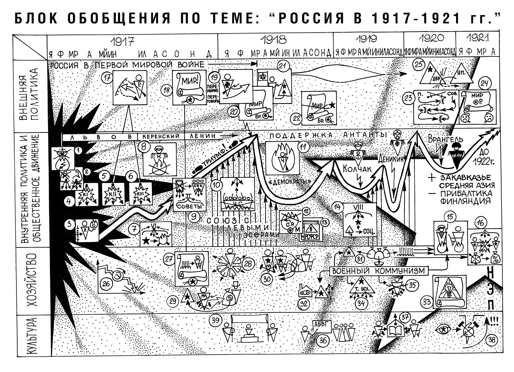
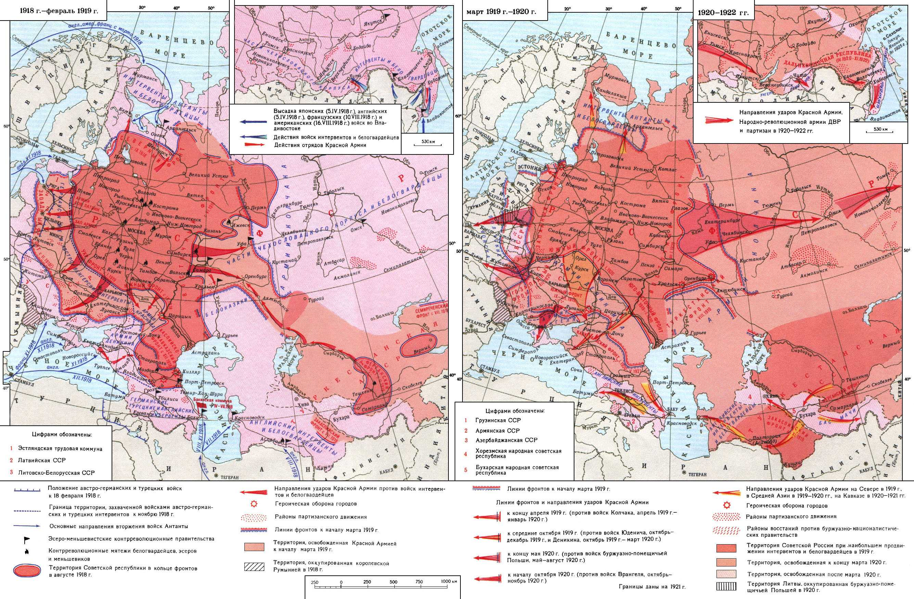

Нажмите на номер. На небольшом экране схему можно прокручивать горизонтально.
Список тем
Систематизация материала
Гражданская война
Три этапа полномасштабной Гражданской войны по авторской схеме. 1921 год выделен отдельно для разбора кризиса. Дальний Восток – до 1922 г.

Общая карта периода. Нажмите для увеличения. Переключатель меняет историческое пояснение, а не границы на карте.
Стороны конфликта
Причины победы большевиков
Контроль центральных районов, транспортных узлов и значительной части ресурсов; централизованные органы управления, мобилизация и организационная сплочённость; отсутствие единства у противников. Земельный и национальный вопросы влияли на выбор населения, но поддержка сторон менялась. Принуждение и насилие применялись различными участниками конфликта.
Справочник
Культура революционной эпохи
Образование, наука и художественные эксперименты в условиях революции и войны. Продолжаются направления, сформировавшиеся в начале XX века; новые формы искусства связаны с просвещением и агитацией.
Всеобщая история · 1917–1921
Редакционная хронология международных событий для сопоставления с историей России.
Самопроверка по 39 темам
Авторские вопросы по материалу блока. Это не задания из сборника Артасова. Вопросы с развёрнутым ответом проверяются самостоятельно.